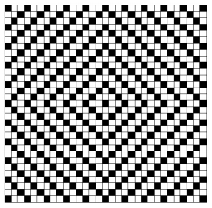

 Nhìn hình bên cạnh, bạn sẽ nghĩ là có các đường cong hướng về tâm. Thực ra đây chỉ là ảo giác chứ đó vẫn là những đường thẳng. Ảo giác này gây ra bởi những ô vuông trắng và đen tác động vào mắt.
Hình bên là một bảng có kích thước (2n+1)x(2n+1). Ban đầu hình chỉ gồm toàn ô trắng và một ô đen ngay chính giữa tâm. Ta sẽ tô màu đen theo từng bước. Tại mỗi bước sẽ tô đen những ô tạo thành một hình kim cương ◊ nhỏ nhất. Hình kim cương này phải chứa những ô tô màu đen trước đó và không được chạm vào chúng (dù chỉ chạm đỉnh). Chúng ta thực hiện quá trình tô này cho đến khi không thể tiếp tục, những bước cuối cùng một phần của hình kim cương sẽ nằm ngoài bảng.
Bạn hãy giúp Conan vẽ lại hình ảo giác trên.
Dữ liệu nhập:
- Là một số nguyên n ( 1 ≤ n ≤ 100)
Dữ liệu xuất:
- In ra bảng (2n+1)x(2n+1) dùng ký tự 'b' và 'w' (biểu thị ô đen hay ô trắng)